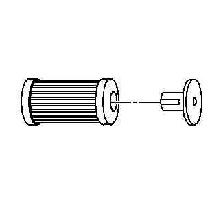

注意:在空调冲洗过程中， 如果发动机或环境温度较高，会缩短制冷剂的回收时间。
1.回收制冷剂。参见制冷剂回收和重新加注。

注意:GE-45268-1中的滤清器可以维修。 将单向阀从滤清器上拆下并将其报废。
11.在每次冲洗前，维修滤清器。
确保 GE-45268-10 上的吸入和排放口 与压缩机软管总成上的吸入和排放口 相对应。
12.将 GE-45268-10 安装至空调压缩机至冷凝器软管 总成。
注意:开始执行冲洗程序前， 关闭外部制冷剂储罐上的阀门。
16.冲洗空调系统。遵照GE-48800空调 维修中心附带的说明书进行操作。
注意:冲洗时会冲掉空调系统中的所有 聚二醇 (PAG) 油。
必须向空调系统添加 适量的聚二醇 (PAG) 油。
21.如果要重新安装已拆下的空调压缩机，则执行 以下程序：
注意:冲洗时会从空调系统中冲掉 荧光泄漏检测染色剂。
23.将一瓶GE-41447R-134A 空调染色示踪剂直接加注 至空调压缩机。